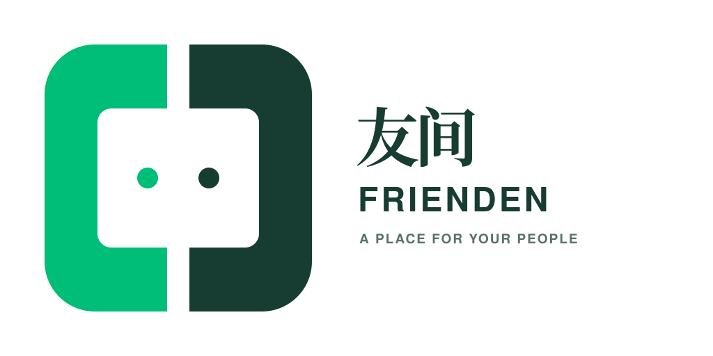
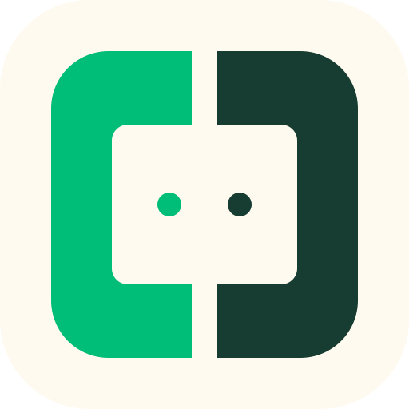
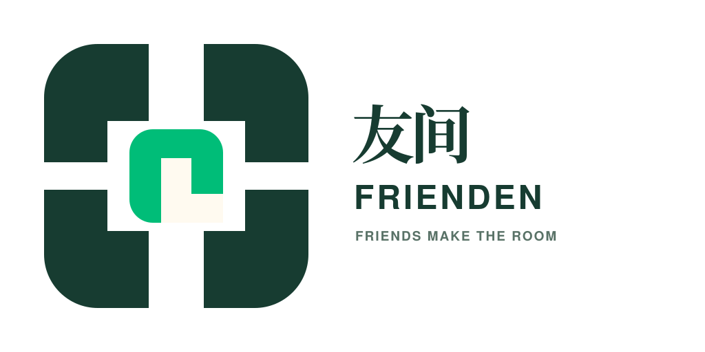
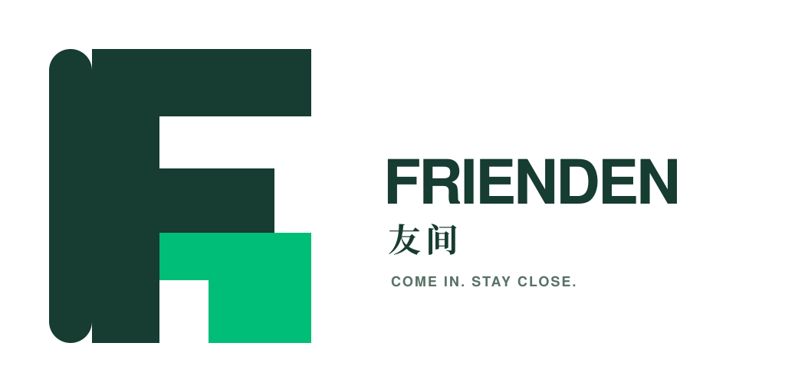
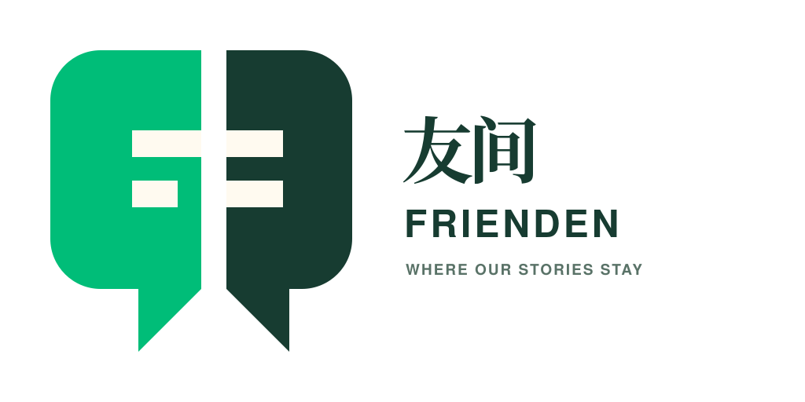

01
相向之门
两扇开放的门彼此相向，中间留下真正的“间”。最贴近品牌定位，也最容易延续当前绿色资产。

友间FRIENDENIDENTITY STUDY / 2026
朋友之间，自有一间。
四种标志方向围绕“关系有地方继续”展开；保留现有网站的纸张感、新芽绿与深墨色，同时让图标在聊天列表、PWA 和小尺寸通知中仍然成立。

两扇开放的门彼此相向，中间留下真正的“间”。最贴近品牌定位，也最容易延续当前绿色资产。

四个位置围绕共同桌面，强调“空间由人组成”。更具社群感，适合多成员与活动场景。

把 FRIENDEN 的 F 变成开放房间，绿色门槛邀请进入。更国际、更直接，也最具软件产品感。

两段对话像折页般靠拢，既是聊天气泡，也是共同内容的容器。与产品功能联系最直接。
把聊天、动态和共同记忆，安放在大家自己的空间里。
中文含义、空间隐喻和现有网站气质衔接最好；图形也能自然拆成 App 图标。
标志首先要让人感到可进入、可停留，而不是抽象的流量网络。
既要有边界，也要欢迎加入；不能像封闭保险箱或企业办公软件。
头像、通知和 PWA 图标是高频场景，细节不能依赖大画幅才能辨认。
友间提供空间，真正的主角仍是每个社群自己的名称、内容和文化。